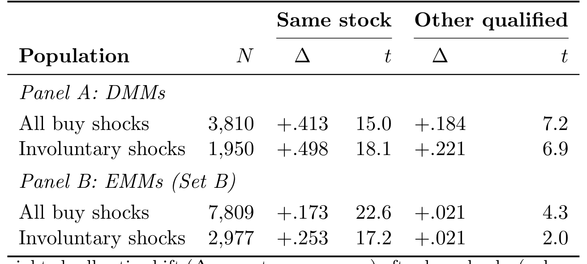
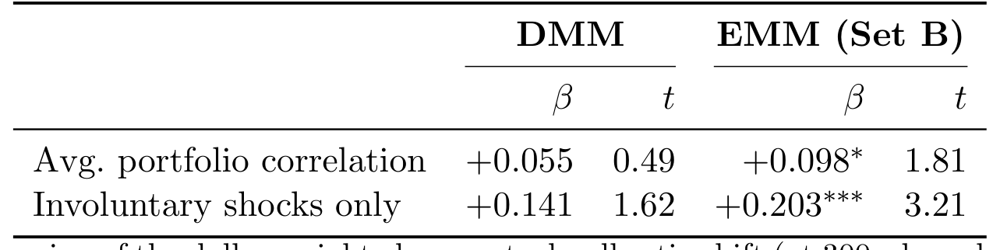
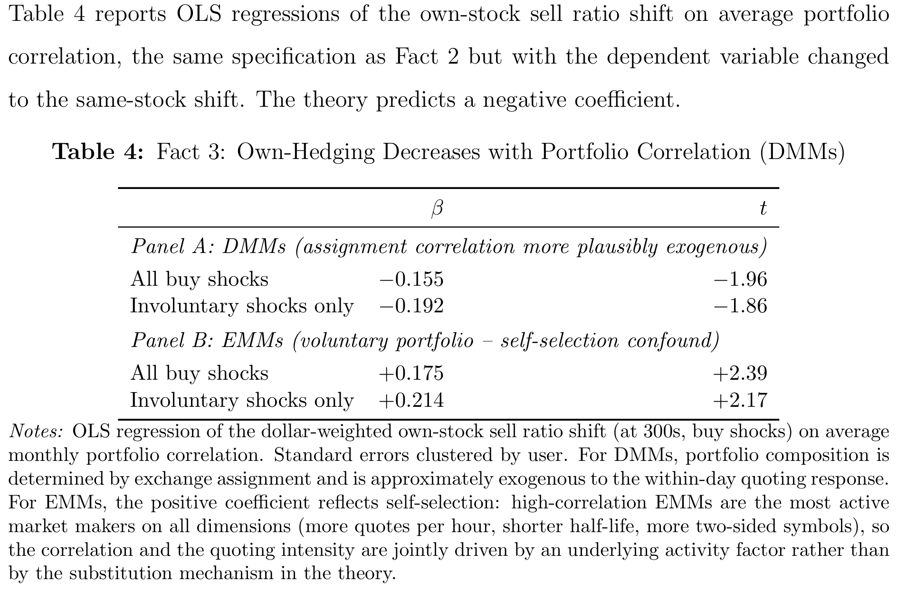
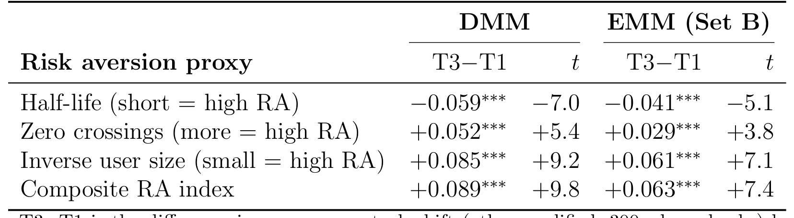
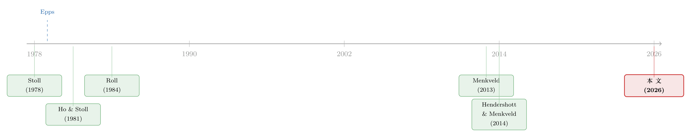

做市商的「一本账」：当一只股票的冲击，悄悄改写了另一只的报价
本文读的是 Roșu, Shkilko, Sojli & Tham (2026)：一个在多只资产上同时报价的风险厌恶做市商，会把单只股票的库存冲击「摊」到整本账上去对冲——某只股票被大量买走后，她不仅在这只股票上调价，还会在与之相关的其他股票上更积极地挂卖单。论文用一个 \(N\times N\) 的定价矩阵 \(\lambda\) 把这套「跨资产对冲」写成闭式解，给出五条可检验预测，并用多伦多交易所逐条消息级数据全部验证；其中最锋利的一条是：只盯着单只股票去反推做市商的风险厌恶，会系统性低估，极端情形下低估高达 50%。
1 一个被忽略了四十年的「供给侧」
现代投资组合理论 (Modern Portfolio Theory) 讲了几十年的故事，几乎全都是需求侧的故事：投资者如何在期望收益与风险之间权衡，把钱铺到一篮子资产上。我们对「买方如何配置组合」了如指掌。
可是，让这些资产能够被买卖的那个人——做市商 (market maker)——她自己面对的，又何尝不是一个组合问题？
这正是这篇论文一上来就要戳破的张力。Virtu Financial，全球最大的电子做市商之一，在它递交给 SEC 的招股文件里写得明明白白：一个做市商的成败，取决于它能否「准确地对相似和相关工具中的市场数据做出反应」。Virtu 同时为 37 个国家、235 个交易场所的 超过 25,000 只证券报价——它把这一整套头寸当作一个相关的组合来管理。
但奇怪的是，库存型做市的经典文献，几乎总是一次只分析一只股票。从 Ho and Stoll (1981) 到把它带进数据的 Hendershott and Menkveld (2014)，库存控制都被简化成「在这一只股票上的报价偏移 (quote shading)」。哪怕模型里塞进了做市商的背景组合风险，它通常也只是个外生的扰动项，而不是让做市商主动地、跨多只资产联合地去设报价、去对冲。
于是两个再自然不过的问题浮出水面：当不同资产上的头寸彼此相关时，做市商如何管理库存风险？而这种多资产的风险管理，又如何反过来作用于价格？
这条思路其实是「风险厌恶做市商」议题的自然延伸。关于单资产下风险限额如何约束做市商，可参见《无风险市场里的风险厌恶：是谁给做市商系上了「风险限额」这根绳》；本文做的，是把那根「绳」从一只股票拉到了一整本账上。
2 模型：把一个标量，撑成一个矩阵
让我们先把模型的骨架搭起来——这篇论文最漂亮的地方，恰恰是它能把这套直觉写成闭式解。
市场上有一个无风险资产和 \(N\) 个风险资产。风险资产的基本面价值 \(v_t\) 服从多元随机游走，增量的瞬时协方差矩阵是 \(\Sigma_v\)。一个垄断的做市商（"she"）在每一期 \(t\) 观察到 \(v_t\)，然后在所有资产上同时设定卖价向量 \(a_t\) 和买价向量 \(b_t\)。她当前的库存是向量 \(x_t\)。投资者提交一个聚合市价单——由一个无弹性成分、一个对「价值减报价」线性的弹性成分、以及一个多元正态噪声组成。
做市商要最大化的，是下面这个目标：
这个目标函数把做市商的两难刻画得很清楚：利润来自买卖价差，但只要手上压着头寸 \(x\)，就要承受一份正比于 \(\gamma\, x_t'\Sigma_v x_t\) 的库存惩罚。注意，惩罚里用的是 \(\Sigma_v\)——也就是说，惩罚的不是单只头寸的大小，而是整个组合的风险。这一个细节，就是后面所有跨资产对冲的源头。
接着，一个自然的问题是：均衡报价长什么样？论文的 Proposition 1 给出了答案，而且是闭式的。最优报价是
$$a_t = v_t - \lambda x_t + h, \qquad b_t = v_t - \lambda x_t - h,$$
其中半价差 \(h\) 与定价矩阵 \(\lambda\) 满足
$$h = k^{-1}\ell, \qquad \lambda = k^{-1}\Lambda,$$
而 \(\Lambda\) 是下面这个二次矩阵方程的唯一对称正定解：
$$\Lambda^2 + \Lambda\Big(S + \tfrac{1-\beta}{\beta}I_N\Big) = S, \qquad S = \gamma k\Sigma_v.$$
当贴现系数 \(\beta \to 1\)（论文此后一律取这个极限以简化公式），解收敛成一个干净的形式：
$$\lambda = \frac{k^{-1}}{2}\Big( (S^2+4S)^{1/2} - S \Big).$$
把买卖价取平均，得到中间价 (midquote)：
$$p_t = v_t - \lambda x_t.$$
全篇的灵魂，就压缩在这一个方程里。 让我们一步步看懂它。
先看最简单的情形：只有一只资产（\(N=1\)）、做市商风险中性（\(\gamma=0\)）。此时 \(S=0\)，由 \(\lambda\) 的公式立刻得到 \(\lambda=0\)——库存完全不影响报价，做市商就在 \(v_t\) 两侧对称地挂出 \(a_t=v_t+h\)、\(b_t=v_t-h\)。
但只要做市商风险厌恶（\(\gamma>0\)），\(\lambda\) 就不再为零，库存开始线性地拖动报价。直觉是这样：假设开盘前做市商接了一堆买单、手上是负库存（\(x_t<0\)，即她净卖出、欠着货）。为了把库存拉回零，她得鼓励新的卖家、劝退新的买家——办法就是把买卖价一起抬高。于是中间价被顶到 \(p_t = v_t + \lambda(-x_t)\) 之上。这就是 Hendershott and Menkveld (2014) 里那个价格压力 (price pressure) 机制。
但真正关键的一步在于：当 \(N>1\)，\(\lambda\) 不再是一个标量，而是一个 \(N\times N\) 的矩阵。对角元 \(\lambda_{ii}\) 是「自身价格压力」；而那些非对角元 \(\lambda_{ij}\)，才是这篇论文的核心——它度量的是「资产 \(j\) 的库存，如何拖动资产 \(i\) 的报价」。当基本面协方差 \(\Sigma_v\) 有正的非对角元时，\(\lambda\) 也有正的非对角元：一个在资产 1 上做多的做市商，会连带把资产 2 的中间价也抬高。这，就是库存的跨资产对冲 (cross-hedging)。
3 五条预测：把一个矩阵读出五种含义
有了 \(\lambda\) 这个对象，论文像剥洋葱一样推出五条彼此环环相扣的预测。
事实 1（跨资产对冲存在）。 当基本面相关系数 \(a=\mathrm{corr}(\Delta v_1,\Delta v_2)>0\) 时，\(\lambda\) 的非对角元为正。资产 1 上挨了一记买入冲击后，做市商会在相关的资产 2 上调整报价以吸引反向的成交流。
事实 2（相关性越高，跨资产对冲越强）。 \(a\) 越大，非对角元 \(\lambda_{12}\) 越大。相关的股票成了更好的「库存替代品」，做市商就越依赖它们来卸货。
事实 3（相关性越高，自身对冲越弱——替代效应）。 这是事实 2 的硬币另一面。\(a\) 越大，对角元 \(\lambda_{11}\) 反而下降。在 \(a\to 1\) 的极端，两只资产完全相关，做市商眼里只剩下「库存之和」，两只资产成了完美替代品——既然资产 2 能完美替你卸货，资产 1 自己就不必那么用力了。
事实 4（风险厌恶越高，跨资产对冲越弱）。 这条最反直觉，也最精彩。Corollary 1 给出了两个极端下的近似。当 \(\gamma\) 很大时，
$$\lambda = k^{-1} + k^{-1}O\big((\gamma k\Sigma_v)^{-1}\big),$$
也就是说 \(\lambda \approx k^{-1}\)——定价矩阵趋近于对角阵。为什么？因为一个极度风险厌恶的做市商，根本不愿意忍受任何库存，她把报价设得让每一只资产的库存都在下一期就几乎回到零。既然每一期库存都被「打回原形」，而各资产的流动性冲击 \(\varepsilon_t\) 之间又互不相关，那么各资产的定价折扣就各设各的，\(\lambda\) 自然变成对角的。换句话说：她把库存均值回复得太快了，快到跨资产对冲根本来不及产生价值。
（作为对照，当 \(\gamma\) 很小时，\(\lambda = \tfrac{1}{2}\gamma^{1/2} k^{-1/2}\Sigma_v^{1/2} + k^{-1}O(\gamma k\Sigma_v)\)，\(\lambda\) 里清清楚楚地带着 \(\Sigma_v^{1/2}\)——对冲此时活跃地依赖于基本面相关结构。）
事实 5（Epps 效应）。 高风险厌恶 \(\Rightarrow\) \(\lambda\) 对角 \(\Rightarrow\) 各资产的报价只对各自的库存独立反应。在高频上，这条「库存驱动的价格压力」通道往价格里注入一个均值回复成分，把测得的收益相关性压低；而在低频上，价格里基本面的随机游走成分占了上风，收益相关性收敛到基本面相关 \(a\)。这正是 Epps (1979) 发现的现象的一个理论版本：股票收益相关性在高频（< 10 分钟）下偏低，在低频（> 1 天）下才趋于一个常数。论文给出的这条「库存通道」，与既有的非同步交易、买卖价反弹等解释互补而非竞争，且它有一个独门预测——衰减的程度，应当随做市商群体的总体风险厌恶而变化。
最后，事实 4 还引出一条对测量的警告。单资产文献习惯用某只资产库存的「半衰期」去反推 \(\gamma\)。但当资产相关、做市商在跨资产对冲时，任何单只头寸的平仓都会变慢——因为相关资产替它分担了一部分调整负担，做市商纠正这只头寸的紧迫感被削弱了。把别的资产当成不相关来处理，就会低估 \(\gamma\)；在与另一资产完美相关的刀刃情形下，孤立地研究单只资产会把风险厌恶低估整整 50%。
4 识别：用 820 万条消息，给「跨资产对冲」拍照
理论很漂亮，但怎么验证？这里就要佩服作者找数据的本事了。
他们用的是多伦多证券交易所 (Toronto Stock Exchange) 的 STAMP 4.0.3 数据流，时间是 2006 年 1 月 13 日这一天。样本含 820 万条带时间戳的订单与成交消息，覆盖 3,169 只标的。之所以盯死这一天，是因为 TSX 这套数据罕见地同时提供了完整的订单全生命周期和做市商级别的身份标识——亚秒级时间戳、完整的订单簿重建、外加每条消息上的用户 ID，让作者得以逐笔重建每个做市商的库存，并实时测量她的报价反应。
他们识别出五类做市商群体，从负有专员义务的指定做市商 (Designated Market Makers, DMMs)，到自愿提供流动性的电子做市商 (EMMs)。
识别策略的核心，是隔离库存冲击、追踪它在做市商账本里的传播：
- 冲击定义：一笔成交，其规模超过该做市商在某「资产对」上均值之上
2个标准差。 - 被解释变量：在资产 1 上发生买入冲击后，测量同一做市商在其他他做市的股票上的「卖出比率 (sell ratio)」——即新挂限价单中卖单的占比——的变化。
结果非常锋利。跨资产对冲是普遍存在的：买入冲击之后，五类做市商无一例外地在其他股票上转向卖方报价，卖出比率的变化从 0.019 到 0.184 不等。

Table 2: Fact1: Cross-StockSellRatioShiftAfterBuyShocks(300s, Dollar-Weighted)
那么，怎么排除「这只是机械地相关的客户订单流」这种平庸解释？作者拿出了三个特征：
第一，反应是「慢慢长出来的」。 跨股反应在 60 秒时与零统计上无法区分，要到 300 秒才达到完整量级。机构的篮子执行确实会铺开几分钟，但 300 秒这个时长，比典型的篮子执行还要长，也与「同时到达的相关订单流」格格不入——后者几秒内就会打到所有报价的标的上。
第二，对「非自愿」冲击的反应大约是两倍。 那些真正制造出新的库存失衡的非自愿冲击，引发的反应比「本身就是库存管理交易」的冲击要大一倍，这支持了因果方向。
第三，调整走的是「被动挂限价单」，而非主动吃单——这正是模型所预言的。
更妙的是负相关情形：模型预测，当资产对负相关时，跨股报价调整应当反号；数据里这个反号被干净地确认了，而「相关客户流」的故事很难干净地生成这种符号翻转。
5 把比较静态也验出来：相关性如何重塑对冲
接着，作者把事实 2 和事实 3 的比较静态也搬上了检验台。他们用 Compustat Global 在 2003 年 1 月至 2005 年 12 月的月度收益相关性，作为长期共动的代理变量。

Table 3: Fact 2: Cross-Stock Shift Increases with Portfolio Correlation
结论如表所示：做市商组合的平均相关性每上升一个标准差，其跨股卖出比率反应大约抬高 29%（相对其无条件均值）。对非自愿冲击，效应翻倍还多，系数升到 0.203（\(t=3.21\)）；在 Set C 做市商（兼具正式专员身份与自愿做市）身上最强，系数 0.225（\(t=2.16\)）。
调整的构成也随相关性移动：分配给跨股通道的库存反应份额，从最低相关五分位的约 13% 单调上升到最高五分位的约 27%。

Table 4: reports OLS regressions of the own-stock sell ratio shift on average portfolio
而事实 3 的替代效应，在 DMMs 身上现身得最清楚——他们的标的是交易所分配的、而非自选的。随着组合平均相关性上升，DMMs 的自身报价调整下降，系数 −0.155（\(t=−1.96\)），正是模型预言的「水平替代」。有意思的是 EMMs 身上出现了相反的模式：最活跃的 EMMs 自己选择去做相关的组合，于是相关性与自身对冲强度通过一个共同的底层因子同向移动——这是选择效应，而非替代效应。这个对比本身，反而成了识别的一份佐证。
最后，事实 4——风险厌恶降低跨资产对冲——也用风险厌恶代理变量做了分组检验。

Table 5: Fact 4: Cross-Stock Shift by Risk Aversion Proxy
6 文献脉络：从单资产的标量，到多资产的矩阵
让我们把这条研究放回它的来路里。
故事的源头是库存型做市理论。Stoll (1978) 与 Amihud and Mendelson (1980) 奠定了「库存成本 ↔ 买卖价差」的基础联系；Ho and Stoll (1981) 推导出单资产做市商的最优价差，成了这一脉的奠基石。三十多年后，Hendershott and Menkveld (2014) 把这套框架带进数据，把「价格压力」识别为做市商恢复库存平衡的机制。而本文做的，是把这条线从一只资产推广到多只相关资产——单资产的定价标量，被升格成一个 \(N\times N\) 的定价矩阵 \(\lambda\)，它的非对角元既在理论上有纪律、又在数据里可被探测。
第二条线是做市商行为的实证。Menkveld (2013) 记录了一个大型高频做市商在单只资产上的库存动态；Brogaard, Hendershott, and Riordan (2014) 研究高频交易者与价格发现，但把每只股票独立处理；Copeland and Galai (1983) 则在单资产框架下考察逆向选择下的报价。本文的实证贡献，是第一次联合地推导多资产闭式定价矩阵、并用做市商身份可识别的消息级数据去检验它的跨资产预测。

第三条线，是 Epps 效应本身。Epps (1979) 记录了「收益相关性随测量频率上升而系统性下降」；主流解释把这种衰减归于非同步交易 (Scholes and Williams, 1977)、买卖价反弹 (Roll, 1984) 与信息流差异 (de Jong and Nijman, 1997)。本文添了一条库存通道——一个激进均值回复库存的风险厌恶做市商，会往价格里注入一个高频上压低共动、低频上消失的暂态成分。它与那些经典解释互补，而非取而代之。
把「中介」放进资产定价，是近年的一条热门主线。关于股票市场里的中介摩擦，可参见《股票，真的是中介「无关」的资产吗？》；本文则提醒我们，中介的「这本账是连在一起的」，会直接渗进价格的横截面与频率结构里。
7 评论与延伸（Q&A + 研究方向）
(a) 几个可能的疑问
Q：「跨资产对冲」和「相关的客户订单流」到底怎么区分？这不是一个老大难吗？
作者用三道防线把两者拆开：一是时序——反应到 300 秒才长满，而相关订单流几秒内就会打到所有标的；二是自愿 vs 非自愿冲击——非自愿冲击（真正制造新失衡的那种）引发的反应大一倍，符合因果方向；三是负相关下的符号翻转——库存对冲会干净地反号，相关客户流故事则不会。三条合起来，比任何单独一条都更有说服力。
Q：只用了 2006 年 1 月 13 日「一天」的数据，结论靠得住吗？
这是最容易被攻击的点。作者的辩护是：他们要的机制运行在日内横截面上，检验利用的是「做市商-股票对」之间的横截面变异，而非跨日的时序变异。再加上 820 万条消息、3,169 只标的、做市商身份可识别，单日样本的横截面信息量其实相当大。但外部效度——这一天是否典型、放到今天高度自动化的市场是否依旧——确实只能存疑。
Q：那个「低估 50%」听起来很惊悚，它有多现实？
50% 是刀刃情形：与另一资产完美相关时才达到。对经验上相关、但远非完美相关的资产对，偏误要小得多。它的价值不在那个具体数字，而在方向与逻辑：只要做市商在管理一本相关的账，单资产测出来的价格冲击、市场质量、库存调整速度，都可能被系统性地扭曲，而扭曲的方向和大小由相关结构决定。
Q：为什么 EMMs 的自身对冲反而和相关性「同向」走，这不违背模型吗？
不违背，反而印证了模型的边界。模型说的「替代效应」是在给定组合下的比较静态；DMMs 的标的是交易所分配的，最接近这个「给定」假设，于是干净地显出负号（$−0.155$）。EMMs 却是自选组合的——最活跃的那批主动去做相关的篮子，于是相关性与对冲强度被一个共同的选择因子一起推高。识别上，这恰恰说明把「分配 vs 自选」分开看是有道理的。
Q：模型里做市商是「垄断者」，现实是激烈竞争，这会不会让结论失真？
这是真实的简化。垄断假设让闭式解成为可能，但也意味着模型给出的是价格压力的上界式刻画。竞争会压缩价差、削弱单个做市商的定价权，非对角元 \(\lambda_{ij}\) 在竞争下大概率会衰减。Daures-Lescourret and Moinas (2023) 那种「两个做市商、两个交易所」的不完全竞争框架，是这条线自然的下一步。
Q：风险厌恶越高，跨资产对冲反而越弱——这跟「越怕风险越要分散对冲」的直觉是不是反的？
表面上反，细想是对的。极度风险厌恶的人，第一诉求是别留任何库存过夜（过期），于是她把每一期的库存都打回零；既然每期都清零，跨期、跨资产去「腾挪对冲」的窗口就被她自己关掉了。对冲需要时间才能体现价值，而她把时间压没了。这也是 Epps 效应在模型里诞生的根源。
(b) 几个可能的研究问题与提案
1. 把这套机制搬到公司债市场。
【经济故事】债券做市商（交易商）天然在「一本相关的账」上做市——同一发行人、同一评级、同一久期桶的债券高度共动。一笔大宗买入冲击，理应让交易商在相邻债券上调整报价。这比股票更干净，因为债券的相关结构（评级、久期、行业）有清晰的先验。
【可行性】中。所需数据：TRACE 逐笔成交 + 交易商身份（TRACE 的非公开版含 dealer ID）。识别可照搬本文的「冲击 → 跨债券报价变化」设计，并用评级/久期距离做相关性代理。难点在于债券报价不像股票那样连续可见，需用成交隐含价差近似。
2. 外资做市商 vs 本土做市商的跨资产对冲差异。 【经济故事】如果外资交易商持有的是更全球化、相关结构不同的组合，他们的 \(\lambda\) 矩阵非对角结构会与本土交易商系统性不同，从而在同一只标的上贡献不同的价格压力。这能把「外资持有人如何影响流动性」的问题，下沉到做市商账本层面。 【可行性】中偏低。需要带交易商国别标签的消息级数据，这类数据极稀缺；可考虑在有外资做市商准入差异的市场（如某些新兴市场交易所）找自然分组。
3. 用「跨资产对冲强度」反推总体风险厌恶的时变。 【经济故事】事实 4 说 \(\lambda\) 的非对角衰减程度是总体风险厌恶的函数。那么在压力时段（如 2008、2020 年 3 月），非对角元应当塌缩、Epps 效应应当加剧。这就把一个不可观测的风险厌恶，变成了可从高频相关结构里读出来的量。 【可行性】高。所需数据：足够长的高频价格序列（TAQ 即可），不必依赖做市商身份。识别策略：估计收益相关性的「频率期限结构」，看它在已知压力事件前后的衰减斜率如何变化。这条最 doable。
4. 把竞争内生进来。 【经济故事】本文的垄断假设是结论的天花板。引入 \(M\) 个相互竞争的多资产做市商，看 \(\lambda\) 矩阵的非对角元如何随竞争强度衰减——这既检验本文机制的稳健性，也连接到市场分割文献。 【可行性】中。理论上是 Daures-Lescourret and Moinas (2023) 与本文的杂交；实证上需要能识别多个做市商在同一标的对上的并发报价，TSX 这类数据可行但工作量大。
5. 跨资产对冲对「流动性共性 (commonality in liquidity)」的微观基础。 【经济故事】文献长期记录流动性会一起涨落，但微观机制含糊。本文给了一个清爽的候选：做市商在一本相关账上的跨资产报价调整，本身就会制造出流动性的共动。 【可行性】中。可把单个做市商的 \(\lambda_{ij}\) 估计加总，检验它能否解释横截面上的流动性共性强度。难点是把「机制贡献」从其他来源（共同资金约束、共同需求冲击）里分离出来。
8 我的判断
这篇论文最扎实的贡献，是把一个长期停留在「单资产标量」的经典框架，干净地升格成一个 \(N\times N\) 矩阵，并且——这才是难得的——让这个矩阵的非对角元既可推导、又可在数据里被直接看见。理论与实证的咬合度很高：五条预测，五张表，连负相关下的符号翻转这种「魔鬼细节」都被验到了。尤其「忽略跨资产对冲会低估风险厌恶」这一条，是真正有方法论穿透力的——它意味着一大批用单资产半衰期反推参数的实证工作，都可能带着一个方向已知的偏误。
对识别，我有三点保留。其一，单日样本：横截面信息量虽大，但 2006 年的 TSX 与今天高度碎片化、算法化的市场是否同构，存疑；这套机制在当代美股上是否同样成立，值得用更长样本去压。其二，垄断假设：现实做市是激烈竞争的，竞争几乎一定会压缩非对角元，论文给出的更像是机制的上界，而非典型量级。其三，「跨资产对冲」与「策略性篮子执行」：300 秒的时序证据很有力，但二者在动机上的边界仍偏薄，若能拿到做市商的意图层面信息（如内部头寸目标），会更让人信服。
后续我最想看到的，是把这套「一本账」的视角搬到公司债与信用市场——那里的相关结构有清晰先验、交易商集中度更高、库存约束更紧，跨资产对冲理应更强、也更要命。如果能在 TRACE 上把这个矩阵估出来，它对理解信用市场的流动性共性与价格压力，可能比在股票上更有分量。
参考文献
- Amihud, Y., & Mendelson, H. (1980). Dealership market: Market-making with inventory. Journal of Financial Economics 8(1), 31–53.
- Brogaard, J., Hendershott, T., & Riordan, R. (2014). High-frequency trading and price discovery. Review of Financial Studies 27(8), 2267–2306.
- Copeland, T. E., & Galai, D. (1983). Information effects on the bid-ask spread. Journal of Finance 38(5), 1457–1469.
- Daures-Lescourret, L., & Moinas, S. (2023). Fragmentation and strategic market-making. Journal of Financial and Quantitative Analysis 58(4), 1675–1700.
- de Jong, F., & Nijman, T. (1997). High frequency analysis of lead-lag relationships between financial markets. Journal of Empirical Finance 4(2–3), 259–277.
- Epps, T. W. (1979). Comovements in stock prices in the very short run. Journal of the American Statistical Association 74(366), 291–298.
- Hendershott, T., & Menkveld, A. J. (2014). Price pressures. Journal of Financial Economics 114(3), 405–423.
- Ho, T., & Stoll, H. R. (1981). Optimal dealer pricing under transactions and return uncertainty. Journal of Financial Economics 9(1), 47–73.
- Menkveld, A. J. (2013). High frequency trading and the new market makers. Journal of Financial Markets 16(4), 712–740.
- Roll, R. (1984). A simple implicit measure of the effective bid-ask spread in an efficient market. Journal of Finance 39(4), 1127–1139.
- Roșu, I., Sojli, E., & Tham, W. W. (2021). Quoting activity and the cost of capital. Working paper.
- Scholes, M., & Williams, J. (1977). Estimating betas from nonsynchronous data. Journal of Financial Economics 5(3), 309–327.
- Stoll, H. R. (1978). The supply of dealer services in securities markets. Journal of Finance 33(4), 1133–1151.